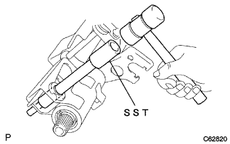
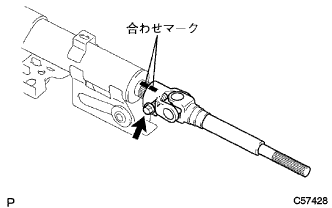

Steering column assembly |
| 1. Ignition or Starter Switch assessed |
With two screws, attach the ignition (starter) switch Assie to the steering collam bracket ASSY UPR.
| 2. Unlock warning switch Assisted |
Slide the unlock warning switch Assies and attach it to the steering column bracket ASSY UPR.
The connector of the unlock warning switch asser is attached to Ignitsushi (Starter) Suitsu ASSY.
| 3. Ignitsushi -sijongsuitsu tilot Tsukushiling Leader ASSY mounting |
Ignitsushi Singyon Tirotsu Tsukushiling Rinder Assy is adjusted to the ACC position.
Insert the Ignitsushi Singyon Tirotsu Tsukushiling Liner ASSY.
Make sure that Ignitsushi Jonjon Tirotsu Tsukushiling Rinder ASSY is securely fixed.
| 4. Inspection of the Steering Rotsuku Mechanism |
When the key is pulled out, make sure that the steering lock mechanism works.
When the key is set to the position of the ACC, check that the steering lock mechanism is canceled.
| 5. Steering main shaft ASSY installation |
Use SST to attach a new steering main shaft swailwear (inner side) to the steering main shaft ASSY.
Attach the steering main shaft ASSY to the steering column tube.
Fix the steering column tube to the vice via an aluminum plate.
 |
Use the SST to attach a new steering main shaft swailwear (outa side) to the steering main shaft ASSY.
| 6. Steering main shaftbush installation |
 |
Apply MP grease 2 inside the new steering main Shiyafu Tsushiyu.
Use SST and hammer to attach a new steering shearftubutsu shu.
| 7. Installation of steering column clamps |
 |
Make the claws and attach a new steering column clamp to a break -auwraketto.
| 8. Installation of breakout lacket |
Apply MP grease No.2 to the position of the steering column youve, tilt leveralotsu bolt and tilt steering stopper.
Attach the steering column -uve with a break away braketto, tilt leveralotsu bolt, tilt steering stopper and tilt steering support color No.2.
| 9. Installed the steering tilt lever |
 |
Apply MP grease No.2 to the position of the steering tilt lever.
Attach the steering tilt lever with a tilt steering Aziya staintunat.
 |
Use only a spring to check the steering tilt lever lock operation load (at the time of lever lock) at the position in the figure.
| 10. Tilt steering support rein horses No.1 installation |
 |
Attach the No.1 tilt steering support reinhose with bolts.
| 11. Tilt steering support color No.1 installation |
Make the claws and attach the tilt steering support color No.1 (black) to the steering column uve.
| 12. Tilt steering support color No.1 installation |
Make the claws and attach the tilt steering support color No.1 (white) to the steering column uve.
| 13. Steering column bracket spacer installation |
|  |
Use SST and hammer to attach a steering column bracket spacer.
| 14. Steering column bracket Assy UPR installation |
 |
The steering column bracket Assy UPR and shift lever retainer are tentatively attached with a new steering rotsbolt.
 |
Use a ping -punch and a hammer to fix the steering column braketto ASSY UPR and a shift lever retainer with a new steering rot pin.
Tighten until the steering rotsuzetto bolt is twisted.
| 15. Steering Interamide Shaft ASSY No.2 Installation |
|  |
Combine the combined mark between the steering interimide shy configuration with Assy No.2 and the steering sliding yoke and attach it with bolts.
| 16. Steering sliding York SUB-ASSY installation |
 |
Combine the matching of the steering interview Siight Sijaft ASSY No.2 and the steering sliding yoke and tentatively attach it with bolts.